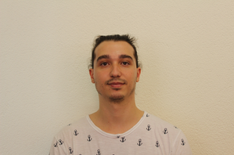

Informaticien de Gestion ES
Chavannes-près-Renens, Suisse
bruno.martins@eduvaud.ch
+41 79 906 06 58
HTML, CSS, Bootstrap, JavaScript & PHP
C#
SQL (MySQL 5.0, InnoDB)
Power Platforms, Sharepoint & MS Forms
Azure DevOps
Méthode Agile (Scrum, Kanban)
Français — Langue maternelle
Anglais — B1
Arts martiaux (Taekwondo, Boxe Thaï)
Musique
Jeux vidéo
Passionné par le développement, j’apprécie particulièrement la logique et la rigueur que cette discipline exige. Curieux et motivé, j’aime explorer de nouveaux horizons et me lancer dans des domaines inconnus afin d’enrichir continuellement mes compétences. Toujours avide de connaissances, je souhaite élargir mon expertise et relever de nouveaux défis techniques.
Février 2022 - Janvier 2023
Note : 5.7 / 6
Août 2025 - Présent
2023 - 2025
2019 - 2023
Durant mon CFC, j’ai développé un jeu inspiré de Space Invaders. Ce projet m’a permis de travailler la logique de jeu, la gestion des collisions, l’affichage graphique et la structure d’un projet complet.
Banime est un site web que nous avons développé en groupe durant mon CFC pour répertorier des animes. Le projet incluait la gestion de fiches, l’organisation des données et une interface simple pour consulter les séries.